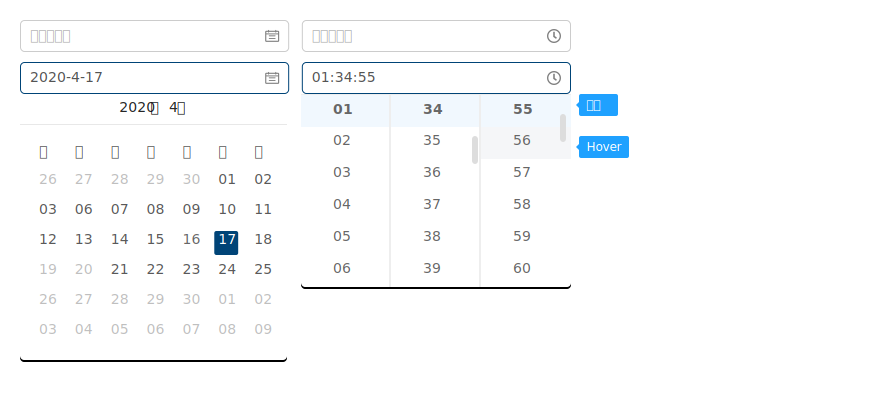
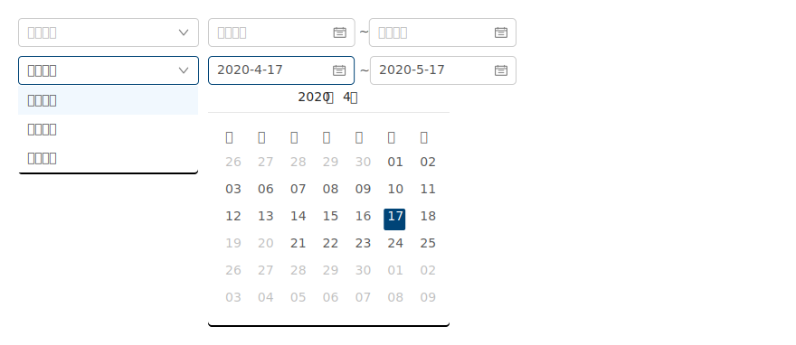

定義
用於選擇特定日期或某個日期期間。
何時使用
當用戶需要輸入一個日期，可以點擊標準輸入框，彈出日期面板進行選擇。
位置
位於卡片、搜尋條件裡面。
規則
用於選擇特定日期或某個日期期間。
類型
1. 單日查詢
(1) 日期
- 需標註下列條件(查詢期限等限制依各模組設計)：可查詢最近三個月資料。
- 無特定預設值時，直接帶查詢當下日期。
- 單店家建立前以 及 當年度以後的年份&月日，月曆則 不顯示或選擇。
(2) 日期+時間
- 無特定預設值時，直接帶查詢當下日期和整點時間（ 如: 2020/3/10-11:40 進入該功能，預設日期時間為 2020-03-10 00:00~12:00）。
- 月曆不可顯示或選擇 - 單店家建立前以 及 當年度以後的年份&月日(除非該日期可能會發生於次年度)。
- 品牌商店-前端訂單查詢-可查詢3年內資料 - 訂單關聯的搜尋日期可參照。
2. 區間查詢
- 開始日期與結束日期，兩者為必填時。
- 需標註下列條件(查詢期限等限制依各模組設計)：可查詢最近三個月資料。
- 無特定預設值時，直接帶查詢當下日期 （如: 2020/3/10 進入該功能，預設日期時間為 2020-03-10 ~ 2020-03-10）
- 月曆不可顯示或選擇 - 單店家建立前以 及 當年度以後的年份&月日(除非該日期可能會發生於次年度)。
- 開始日設定為3-10時，結束日只能挑選 3-10 後的日期。
- 結束日設定為3-10時，開始日只能挑選 3/10 前的日期。
- 品牌商店-前端訂單查詢-可查詢3年內資料 - 訂單關聯的搜尋日期可參照。
(1) 日期區間
(2)下拉及區間
3. 發票字軌
(1) 設定發票字軌狀態
- 年度：預設帶當年度，可往後選 1 年。
(2) 查詢狀態
- 年度：預設帶當年度起始月份，可往當年度前查 9 年。
- 月往當年度後查 1 年最多可查詢共11 年，最少 1 年，即當年度。
- 品除了當年度外無資料的年度不可顯示。